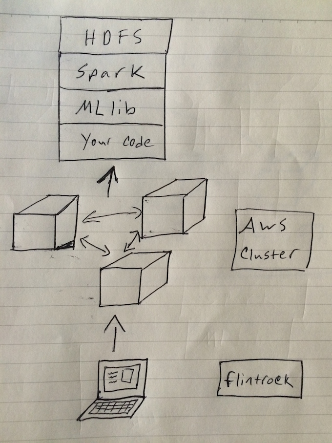
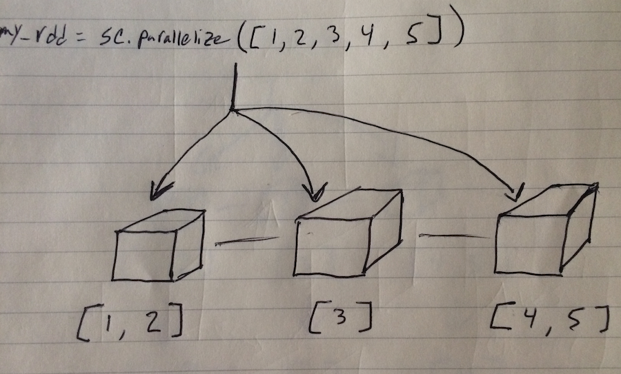
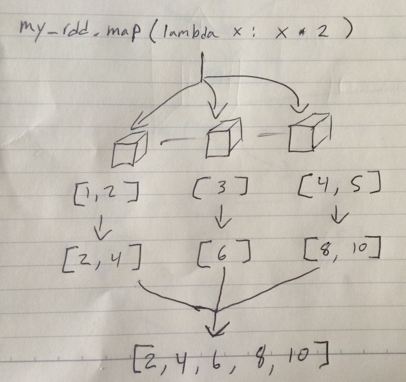
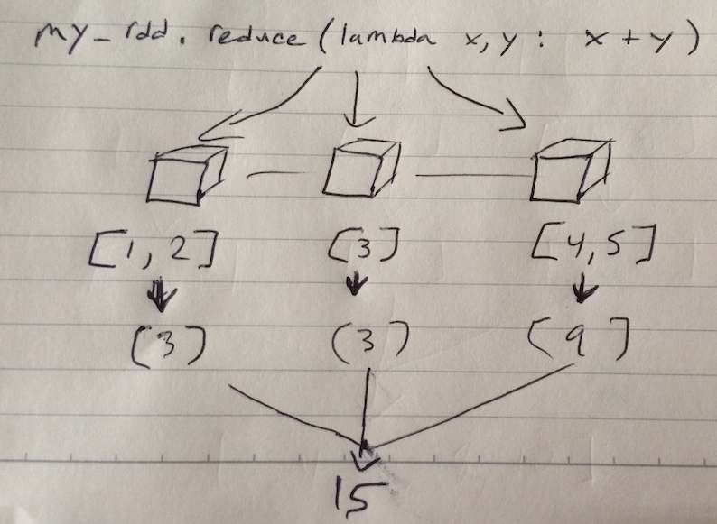
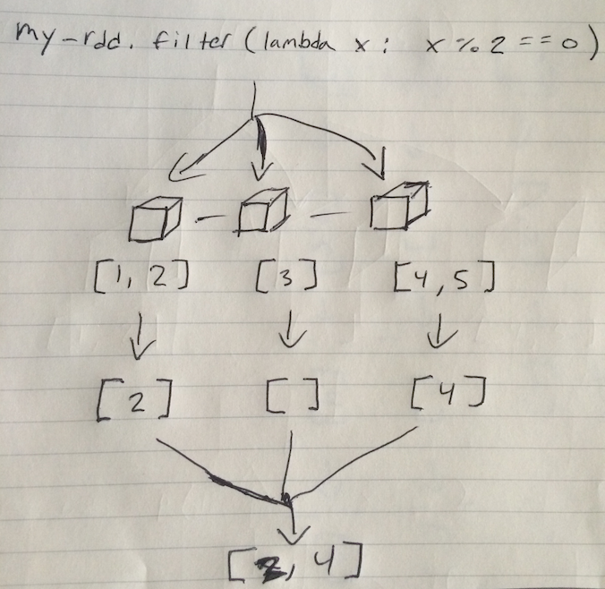

1) Understand (some of) the ecosystem of tools for machine learning with big data.
2) Be able to apply predictive models to large data sets on a remote server cluster.
Amazon Web Services - A suite of cloud computing services that make up an on-demand computing platform.
Rentable virtual computers on which individuals can run their own applications.
A managed Hadoop framework to distribute and process data across dynamically scalable Amazon EC2 instances.
Durable and highly-scalable cloud storage.

from pyspark import SparkContext as sc
# create an RDD from a list
my_rdd = sc.parallelize([1, 2, 3, 4, 5, 6])
# or create one by reading in data
another_rdd = sc.textFile("/path/to/some/data")
# "gather" the elements of the RDD
my_rdd.collect()
# output: [1, 2, 3, 4, 5]



Chaining works basically how you would expect.
even = lambda x: x % 2 == 0
double = lambda x: x * 2
add = lambda x, y: x + y
my_rdd.filter(even).map(double).reduce(add) #output: 12
"""
[1, 2] => [2] => [4] => 4
[3] => [] => + => 12
[4, 5] => [4] => [8] => 8
"""Good news! No more drawing!
data = sc.textFile("path/to/some.data")
parsedData = data.map(parsePoint)
# Build the model
model = LinearRegressionWithSGD.train(parsedData, iterations=100, step=0.00000001)
# Make a prediction for a new point
print(model.predict(p))data = sc.textFile("path/to/some.data")
parsedData = data.map(parsePoint)
# Build the model (cluster the data)
clusters = KMeans.train(parsedData, 2, maxIterations=10,
runs=10, initializationMode="random")
# Predict the cluster for a new point
print(clusters.predict(p))Analyze a classification algorithm to a large data set using Spark / MLlib running on an AWS cluster.
T,2,8,3,5,1,8,13,0,6,6,10,8,0,8,0,8
I,5,12,3,7,2,10,5,5,4,13,3,9,2,8,4,10
D,4,11,6,8,6,10,6,2,6,10,3,7,3,7,3,9
N,7,11,6,6,3,5,9,4,6,4,4,10,6,10,2,8
G,2,1,3,1,1,8,6,6,6,6,5,9,1,7,5,10
S,4,11,5,8,3,8,8,6,9,5,6,6,0,8,9,7
B,4,2,5,4,4,8,7,6,6,7,6,6,2,8,7,10
A,1,1,3,2,1,8,2,2,2,8,2,8,1,6,2,7
J,2,2,4,4,2,10,6,2,6,12,4,8,1,6,1,7
M,11,15,13,9,7,13,2,6,2,12,1,9,8,1,1,8
X,3,9,5,7,4,8,7,3,8,5,6,8,2,8,6,7
O,6,13,4,7,4,6,7,6,3,10,7,9,5,9,5,8
. . . .
. . . .
. . . .
. . . .from pyspark.mllib.tree import RandomForest, RandomForestModel
from pyspark.mllib.regression import LabeledPoint
from pyspark import SparkContext
if __name__ == "__main__":
sc = SparkContext(appName = "letter-recognition")
# mapping alphabet to integers
ALPHABET = list("ABCDEFGHIJKLMNOPQRSTUVWXYZ")
clean_value = lambda row: LabeledPoint(ALPHABET.index(row[0]), row.split(',')[1:]) # read data and convert to labeled points
raw_data = sc.textFile("hdfs:///data/letter-recognition.data")
labeled_points = raw_data.map(clean_value)
# separate into testing and training data
(train, test) = labeled_points.randomSplit([0.7, 0.3])
# build our model from the training data
model = RandomForest.trainClassifier(train, numClasses=26, categoricalFeaturesInfo={},
numTrees=50, featureSubsetStrategy="auto",
impurity='gini', maxDepth=16, maxBins=32) # score the performance of our model on test data
labels = test.map(lambda point: point.label)
predicitons = model.predict(test.map(lambda point: point.features))
labels_and_predictions = labels.zip(predicitons)
total_correct = labels_and_predictions.filter(lambda x: x[0] == x[1])
correct_percentage = total_correct.count() / float(labels_and_predictions.count())
print ("PERCENTAGE CORRECTLY CLASSIFIED: {}".format(correct_percentage))
"""
You may want to do something else here.
For example, write the model to a file which can be exported to S3.
"""
sc.stop()flintrock configureinstall-hdfs to Trueflintrock launch my_clusterflintrock login my_clusterThe machines in our cluster require some setup (i.e. we need to install dependencies)
sudo yum install -y gcc
sudo pip install numpyS3 is ideal for hosting large files, copy from there. AWS CLI syntax is:
aws s3 cp s3://bucket/file ./local/pathGrab our data and code:
aws s3 cp s3://python-nepstein/letter-recognition.data ./letter-recognition.data
aws s3 cp s3://python-nepstein/classify-letters.py ./classify-letters.pyhadoop/bin/hadoop fs -put letter-recognition.data /
hadoop/bin/hadoop fs -put classify-letters.py /Lastly...
spark/bin/spark-submit hdfs:///classify-letters.py... and done!